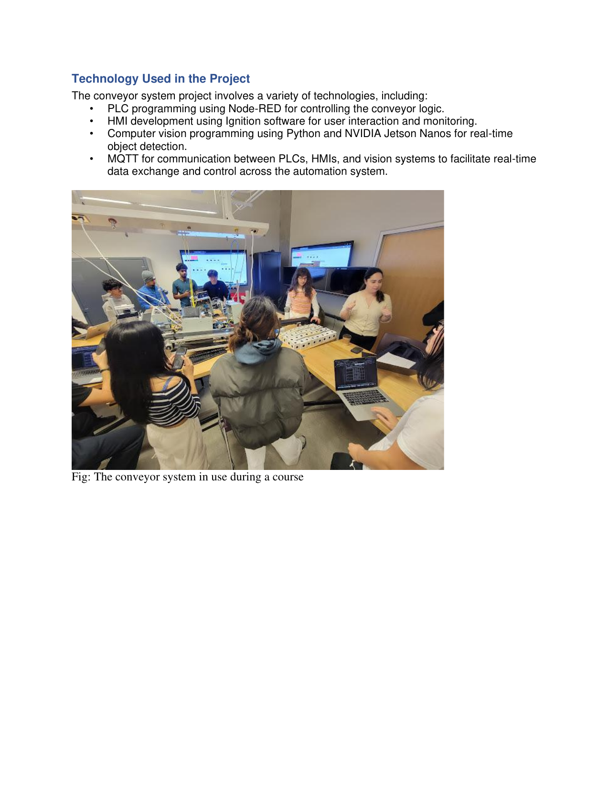

IDEAs Clinic role
Public IDEAs Clinic profile material describes Silas as an Engineering Educational Developer with expertise in data analysis, design engineering, and IIoT equipment development, contributing to industry collaboration and teaching support at the IDEAs Clinic.
- Designed and delivered IoT, automated, instrumentation, optical, and machine-vision systems for engineering courses.
- Supported experiential learning across engineering programs.
- Led and mentored multidisciplinary co-op teams.
- Organized and delivered partner-focused hackathons and workshops.

20+ technical systems
Notion resume material says Silas designed and delivered over 20 IoT, automated, instrumentation, optical, and machine-vision systems used across engineering courses.
8,000+ students annually
Source material says the work supported experiential learning for over 8,000 students annually across multiple engineering programs.
100+ co-op students
Source material says Silas led and mentored more than 100 co-op students across multidisciplinary engineering teams.
Partner challenge portfolio
The IDEAs Clinic site publicly lists Toyota Innovation Challenge, Canadian Nuclear Laboratories Innovation Challenge, and Health Tech Innovation Challenge under co-curricular activities. The Notion material additionally lists Toyota, WRHN, IQC, CNL, UN-Habitat, and other partners in the context of topic-specific hackathons and workshops.
Project-management pattern
The portfolio frames leadership as product-like delivery: requirements gathering, prototyping, testing, deployment, iteration, stakeholder alignment, training, documentation, and maintenance for real hardware/software systems.
Why this matters
The Pearl Sullivan Engineering IDEAs Clinic supplements traditional engineering curriculum with open-ended, hands-on activities. Its public description emphasizes real-world engineering problems, self-learning, experimentation, communication, teamwork, creativity, judgement, and problem solving. This project-management track shows how technical systems and partner challenges are translated into repeatable learning experiences.
Open IDEAs Clinic homepageSource basis: Align 2026 Notion resume material and University of Waterloo IDEAs Clinic public profile, homepage, and challenge pages.